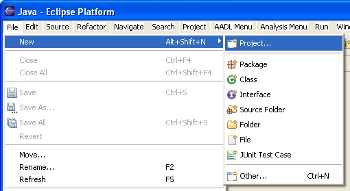
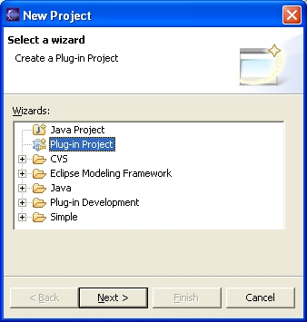
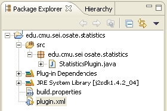
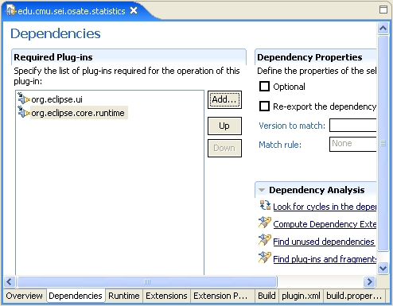

Previous
Next
Previous
Next 
| 3.1 Creating a New Plug-in |
The
simplest way to create an OSATE plug-in is to either copy and paste one of the example
plug-in projects such as the Architecture project, or to import an OSATE plug-in project
template (we
will need to set one up).
This is the simplest way because it already provides a
skeleton implementation of the plug-in.
| 3.1.1 Creating a Plug-in Project |
Here we create a new plug-in project using the Eclipse project wizard.
- Select File | New | Project... to open the project wizard. See Figure 1.

Figure
1: Creating a new project.
- Select Plug-in Project and click on Next. See Figure 2.

Figure
2: Selecting the plug-in project wizard.
- Enter a name for the plug-in. This name is also used for the Java package that will contain the source files for this plug-in. Therefore, this name should be Java package- style name. Here we use edu.cmu.sei.osate.statistics.
- Click on Next.
- Click on Finish.
A new project and source tree will be created; the structure of the newly created
plug-in
package is shown in Figure 3.

Figure
3: The contents of the new plug-in project.
The wizards creates
- A new Java package with the same name as the plug-in project.
- A new class StatisticsPlugin that manages the lifecycle of the plug-in. In general, you do not need to edit this class.
- A plug-in manifest file, plugin.xml, that describes the appearance and structure of the plug-in. We will edit this file to declare the plug-in’s dependencies on other plug- ins as well as to define the toolbar button that is used to activate the plug-in’s action.
- A build.properties file that is used by Eclipse to influence how the plug-in in built. You generally do not have to edit this file.
| 3.1.2 Setting the Plug-in’s Dependencies |
Our
first concern is establishing the plug-in’s dependencies on other plug-ins. Plug-ins export
Java packages into the Eclipse environment and, conversely, must declare which plug-ins they
depend on. By default, a plug-in project generated from the Plug-in Project wizard
already
depends on the org.eclipse.ui and org.eclipse.core.runtime plug-ins. Our model statistics
plug-in utilizes the AADL meta-model, which is itself modeled in the EMF framework. The
plug-in, therefore, also depends on the edu.cmu.sei.aadl.model plug-in and the
org.eclipse.emf.ecore plug-in. In general, it is expected that any OSATE plug-in will use
the
AADL meta-model, and thus depend on these two packages.
Our
model statistics plug-in also depends on the plug-in edu.cmu.sei.osate.ui. This plug-in
defines abstract implementations of Eclipse actions that we extend to drive the plug-in from
Eclipse’s user interface; see Section 3.3.1 Eclipse Actions. See Section 9 Packages
Provided by the OSATE Plug-ins for a description of which packages are in which OSATE
plug-ins.
Plug-in
dependencies are declared in the plugin.xml file:
- Edit plugin.xml.
- Go to the Dependencies pane. See Figure 4.
- Click on Add... under Required Plug-ins.
- Select the appropriate plug-in to add from the list. See Figure 5.

Figure 4: Editing a plug-in's dependencies.

Figure 5: Selecting a plug-in.
Alternatively,
you can edit the XML directly by going to the plugin.xml pane. The
dependencies are declared in the requires clause, e.g.,
<requires>
<importplugin="org.eclipse.ui"/>
<importplugin="org.eclipse.core.runtime"/>
<importplugin="edu.cmu.sei.aadl.model"/>
<importplugin="org.eclipse.emf.ecore"/>
<importplugin="edu.cmu.sei.osate.ui"/>
</requires>
<importplugin="org.eclipse.ui"/>
<importplugin="org.eclipse.core.runtime"/>
<importplugin="edu.cmu.sei.aadl.model"/>
<importplugin="org.eclipse.emf.ecore"/>
<importplugin="edu.cmu.sei.osate.ui"/>
</requires>